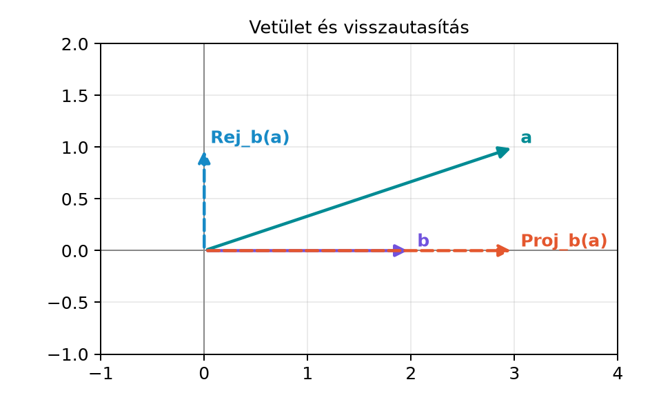

5.2 Vetítés és visszautasítás
(projection, rejection)
5.2.1 Motiváció
Az előző alfejezetben láttuk, hogy a vektorral való osztás lehetséges
a geometriai szorzatban: ha
,
akkor
.
Most egy alapvető geometriai feladatra használjuk ezt: bontsuk fel az
vektort egy
iránnyal párhuzamos, illetve arra merőleges részre. Ilyen felbontásra
van szükség, amikor például egy erőt egy tengely irányára vetítünk, egy
pontnak egy egyenestől való távolságát keressük, vagy amikor a
koordináta-rendszer bázisait merőlegesíteni akarjuk. A hagyományos
vektorgeometriában a vetület képlete ismert:
.
A geometriai algebraban ennél többet kapunk: a merőleges részt is
ugyanolyan egyszerű szorzatként tudjuk előállítani, mégpedig a külső
szorzat segítségével.
5.2.2 Szemléletes kép
Tekintsük az
vektort, és válasszuk a
irányt. A
-vel
párhuzamos rész a vízszintes,
vektor, a
-re
merőleges rész pedig a függőleges
vektor. Az alábbi ábrán a szaggatott nyilak mutatják a két
komponenst.

Vetület és visszautasítás - Az a vektor a
3e1+e2, a b vektor a 2e1. A vetület 3e1, a visszautasítás e2; a vetület
párhuzamos b-vel, a visszautasítás merőleges b-re.
A feladat tehát: adjunk képletet a párhuzamos és a merőleges
komponensre, és ellenőrizzük, hogy az összegük valóban visszaadja
-t.
5.2.3 Definíció
Legyenek
vektorok,
.
Az
vektor
irányra eső merőleges vetülete (projection) az a
vektor, amely párhuzamos
-vel,
és amelyre
-nak
a vetülettől vett különbsége merőleges
-re.
A geometriai algebrában ezt így írjuk:
Az
vektor visszautasítása (rejection) a
-re
merőleges komponens:
Mivel
,
a vetület hagyományos alakja:
A visszautasítás hagyományosan az
különbség; a fenti definíció éppen ezt adja, amint rögtön belátjuk.
5.2.4 A felbontás levezetése
Induljunk ki abból az egyszerű észrevételből, hogy
.
Ezért
Itt az asszociativitás miatt a zárójel elhagyható, de a zárójellel
hangsúlyozzuk, hogy először az
geometriai szorzatot képezzük. A geometriai szorzat alapösszefüggése
szerint
Ezt behelyettesítve:
Ez éppen a kívánt felbontás:
Fontos, hogy itt mindkét tag vektor. Az első tag nyilvánvalóan
vektor, mert
skalár, és
vektor. A második tagra ez még nem látszik azonnal, hiszen
bivektor. A következő tétel tisztázza ezt.
5.2.5 Tétel: a visszautasítás
vektor és merőleges
-re
Tétel. Legyenek
vektorok,
.
Ekkor
vektor, és merőleges
-re.
Bizonyítás. Először megmutatjuk, hogy
vektor. Használjuk a külső szorzat definícióját:
Szorozzuk meg jobbról
-vel:
Mivel
és
skalárok, a jobb oldal a
és
vektorok lineáris kombinációja, tehát vektor. Ebből az is következik,
hogy
ami vektor.
Most belátjuk a merőlegességet. Vegyük a fenti vektor skalárszorzatát
-vel:
A skalárszorzat lineáris, ezért
Mivel
párhuzamos
-vel,
ezért a
vektor is merőleges
-re,
hiszen a merőlegesség csak a skalárszorzaton múlik. Ezzel a tételt
beláttuk.
A bizonyításból az is kiolvasható, hogy a visszautasítás kifejezhető
a hagyományos különbségként:
Ezért szokták a visszautasítást úgy is nevezni, hogy „ami megmarad” a
vetítés után.
5.2.6 Kidolgozott példa
Legyen
és
.
Számoljuk ki a vetületet és a visszautasítást.
Először
,
tehát
.
A skalárszorzat:
Így a vetület:
A külső szorzat:
A visszautasítás:
Használjuk a szorzótáblát:
.
Tehát
Az összeg valóban:
A visszautasítás merőleges
-re,
mert
.
5.2.7 Pont távolsága
egyenestől
A visszautasítás közvetlen alkalmazása az origón átmenő egyenesektől
való távolság kiszámítása. Legyen az egyenes irányvektora
,
és legyen a
vektor az origóból a pontba mutató vektor. A pont vetülete az egyenesre
,
a visszautasítás pedig a pontból az egyenesre mutató merőleges szakasz.
A távolság tehát a visszautasítás hossza:
Az utolsó egyenlőségnél azt használtuk, hogy
hossza
,
és hogy a bivektor hossza az irányított terület nagysága. Geometriailag
ez azt mondja, hogy a távolság egyenlő a
és
által kifeszített paralelogramma területének és
hosszának hányadosával.
A fenti példában
,
,
a visszautasítás
,
így a távolság
.
5.2.8 Kapcsolat a
Gram–Schmidt-eljárással
A Gram–Schmidt-eljárás arra szolgál, hogy egy vektorhalmazból
páronként merőleges vektorokat készítsen. Az első lépés éppen a
visszautasítás kiszámítása. Ha adott két vektor
és
,
akkor a
-re
merőleges komponens:
Ezzel a képlettel tehát egyetlen geometriai szorzattal megkapjuk az
ortogonalizált vektort. A Gram–Schmidt-eljárás további lépései ugyanezt
a gondolatot ismétlik: minden új vektorból kivonjuk a már merőlegesített
vektorokra eső vetületeket.
5.2.9 Python-ellenőrzés
Az alábbi kód a ga2 modul MV2 osztályát és
a vec2 segédfüggvényt használja. A | operátor
vektorokra a skalárszorzatot adja, a ^ a külső szorzatot,
az inverse() pedig a vektor inverzét.
from ga2 import MV2, vec2a = vec2(3, 1)b = vec2(2, 0)proj = (a | b) * b.inverse()rej = (a ^ b) * b.inverse()print("vetület:", proj)print("visszautasítás:", rej)print("összeg:", proj + rej)print("merőleges-e:", rej | b)
A kimenetben a visszautasítás valóban vektor, és a
-vel
vett skalárszorzata nulla.
5.2.10 Tipikus hibák és
félreértések
Sorrendcsere a szorzásban. A geometriai szorzat
nem kommutatív. A
kifejezésben a sorrend lényeges:
nem ugyanaz, mint
.
Mivel
párhuzamos
-vel,
a bivektorral való szorzás előjelet vált:
.
Ez a visszautasítás ellentettje, tehát nem a kívánt vektor.
A bivektor szor véve vektorral nem bivektor.
Gyakori félreértés, hogy ha egy bivektort megszorzunk egy vektorral, az
eredmény is bivektor. G(2)-ben azonban bivektor szor vektor vektort ad:
például
.
A visszautasítás ezért vektor, annak ellenére, hogy a képletben egy
bivektor is szerepel.
A vetület képletéből hiányzik az inverz. A
önmagában skalár, nem vektor. A vetület vektora
vagy hagyományosan
.
Az inverz elhagyása dimenzióhibát is okoz.
A visszautasítás és a merőleges vetület
összekeverése. A vetület párhuzamos
-vel,
a visszautasítás merőleges rá. A két komponens összege
,
de a visszautasítás nem a vetület ellentettje, és nem is annak merőleges
vetülete egy másik tengelyre; az a képletben a külső szorzatból
jön.
5.2.11 Feladatok
Fogalmi kérdés. Miért nevezzük a
komponenst visszautasításnak? Mit „utasítunk vissza”, és mi marad meg
belőle?
Kézi számolás. Legyen
és
.
Számítsd ki
és
értékét, és ellenőrizd, hogy összegük
,
a visszautasítás pedig merőleges
-re.
Levezetési feladat. A tükrözésnél az
vektort úgy tükrözzük a
egyenesre, hogy a párhuzamos komponenst megtartjuk, a merőleges
komponenst pedig ellentettjére cseréljük. Vezesd le, hogy ez a tükrözés
kifejezhető így:
Mutasd meg, hogy ez egyenlő
-gyel.
(Ezt az eredményt használjuk a következő, Tükrözés
egyenesre: v′ = n v n alfejezetben.)
Alkalmazási/Python-feladat. Írj
Python-függvényt, amely kiszámítja egy
pont távolságát az origón átmenő,
irányvektorú egyenestől. Használd a
képletet, és teszteld a
,
esettel.
5.2.12 Megoldások
A „visszautasítás” elnevezés arra utal, hogy a
-re
merőleges komponens az a rész, amelyet a vetítés „visszautasít”, azaz
nem visz magával a
irányába. A vetület a párhuzamos rész, a visszautasítás pedig a maradék;
a kettő összege visszaadja az eredeti vektort.
Először
,
tehát
.
A skalárszorzat:
A vetület:
A külső szorzat:
A visszautasítás:
Mivel
és
,
ez
Az összeg:
.
A merőlegesség:
.
A tükrözés a párhuzamos rész megtartásával és a merőleges rész
előjelváltásával adódik:
Másrészt a geometriai szorzatban
mert
.
Így
Tehát a tükrözés képlete
.
Ez az alak a következő alfejezetben egységvektor esetén
lesz.
A függvény:
from ga2 import MV2, vec2import mathdef distance_to_line(p, b): B = p ^ b# A bivektor e12 együtthatójának abszolút értéke a terület,# a b hossza pedig sqrt(b|b).returnabs(B.e12) / math.sqrt(b | b)p = vec2(3, 1)b = vec2(1, 2)print(distance_to_line(p, b))
2.2361
A p =
,
b =
esetben
,
így
,
,
tehát a távolság
.
(Lebegőpontos kimenet, 4 tizedesre kerekítve.)
5.2.13 Rövid összefoglaló
Ebben az alfejezetben a geometriai szorzattal bontottuk fel az
vektort egy
iránnyal párhuzamos és arra merőleges részre. A levezetés alapja az
azonosság, majd az
felbontás. A párhuzamos rész a vetület:
,
a merőleges rész a visszautasítás:
.
Beláttuk, hogy a visszautasítás vektor, és merőleges
-re,
továbbá hogy
.
A távolság képlete:
.
A visszautasítás adja a Gram–Schmidt-eljárás első lépését is.
Továbbvitt eredmények: a
felbontást általánosítjuk altérre a Vetítés síkra és
altérre alfejezetben; a párhuzamos rész megtartásából és a merőleges
rész előjelváltásából pedig a tükrözést nyerjük:
,
amit a Tükrözés egyenesre: v′ = n v n alfejezet
használ fel.
5.2.14 Források és ellenőrzési
hiányok
Az itt bemutatott azonosságok a geometriai algebra standard, az
axiómákból közvetlenül levezethető eredményei. A Python-kód a könyv
saját ga2 moduljának tervezett felületére épül; a
| operátor vektorokra skalárt ad, az inverse()
metódus pedig a Vektor inverze: osztás vektorral
alfejezetben bevezetett
képletet használja. A megadott kiinduló forrásokat (Macdonald jegyzete,
geometricalgebra.org) nem áll módunkban ellenőrizni, ezért konkrét
állítást vagy jelölésbeli eltérést nem idézünk belőlük.